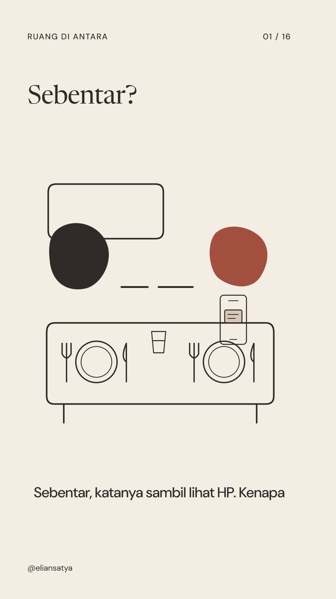
Sebentar, katanya sambil lihat HP. Kenapa cerita lo jadi berhenti di meja makan?
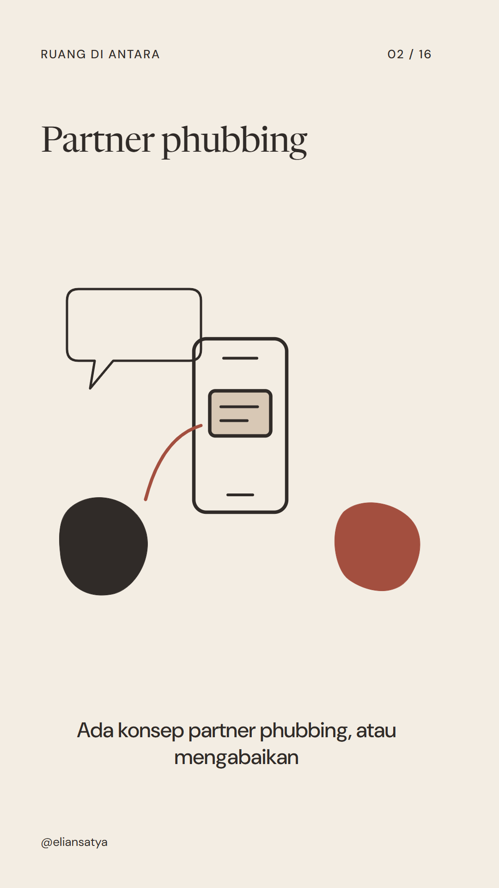
Ada konsep partner phubbing, atau mengabaikan pasangan karena perhatian beralih ke ponsel.
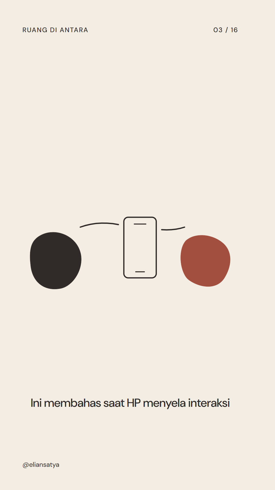
Ini membahas saat HP menyela interaksi yang sedang kalian jalani bersama.
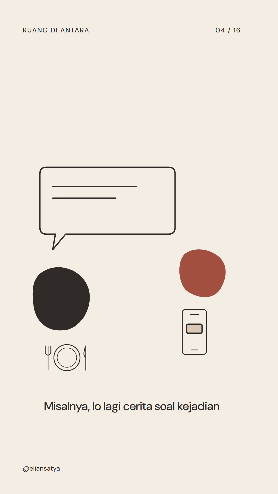
Misalnya, lo lagi cerita soal kejadian di kantor. Dia membuka notifikasi.
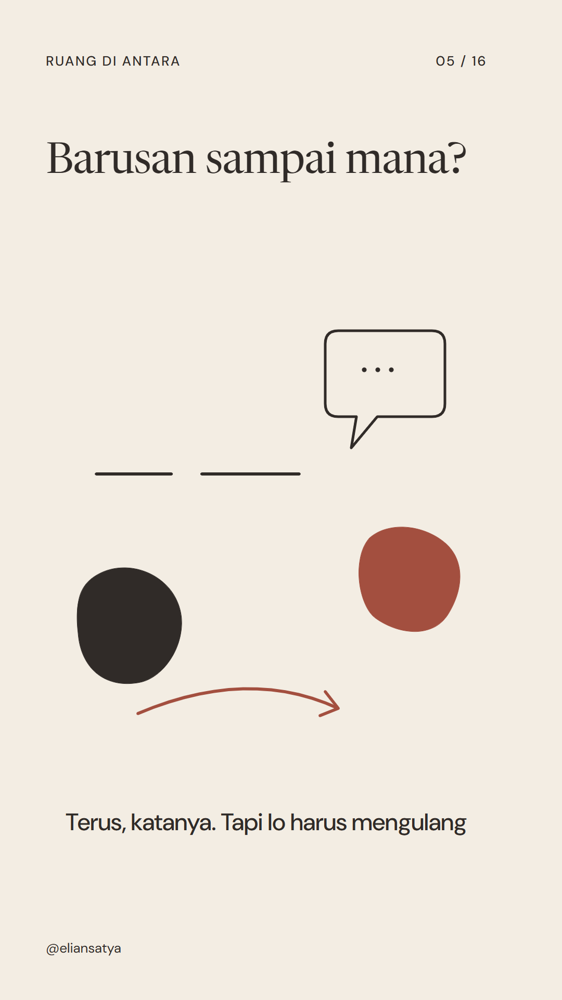
Terus, katanya. Tapi lo harus mengulang bagian yang barusan lewat.
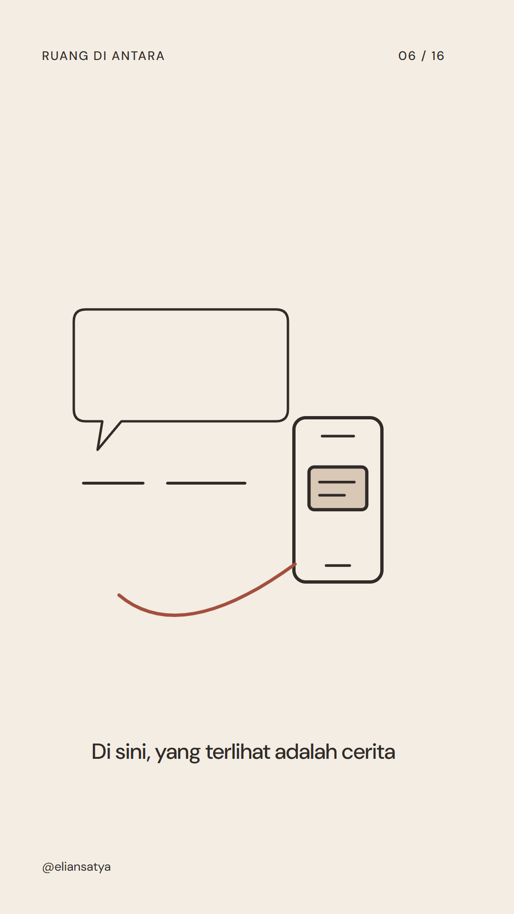
Di sini, yang terlihat adalah cerita terputus dan perhatian yang berpindah.
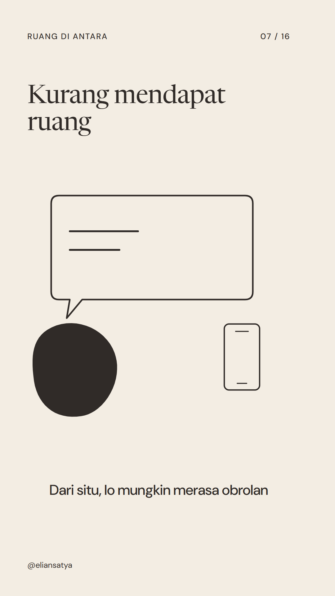
Dari situ, lo mungkin merasa obrolan ini kurang mendapat ruang.
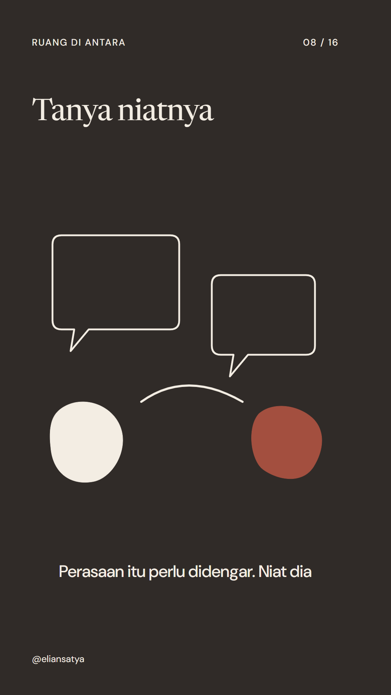
Perasaan itu perlu didengar. Niat dia tetap perlu ditanyakan.
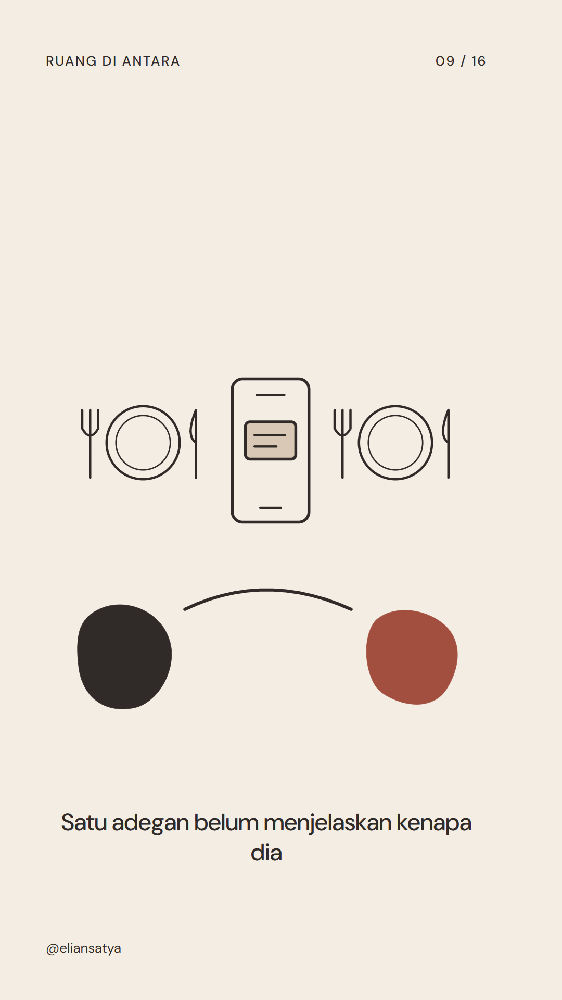
Satu adegan belum menjelaskan kenapa dia membuka HP, apalagi kadar sayangnya.
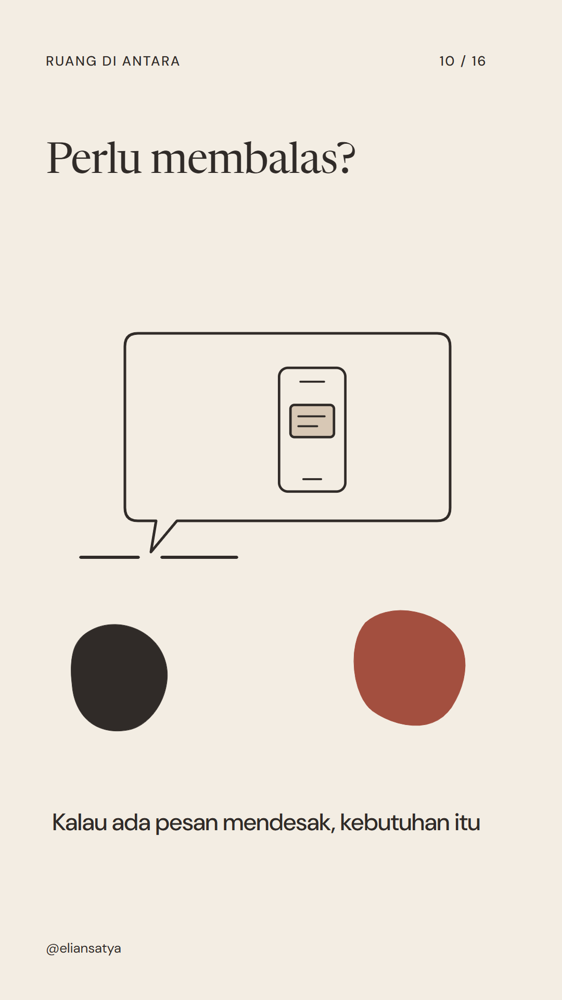
Kalau ada pesan mendesak, kebutuhan itu bisa disampaikan, supaya kalian tahu percakapannya sedang dijeda.
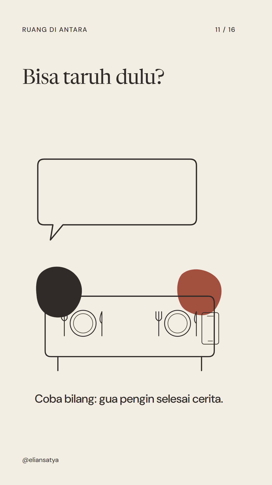
Coba bilang: gua pengin selesai cerita. Bisa taruh HP dulu selama kita makan?
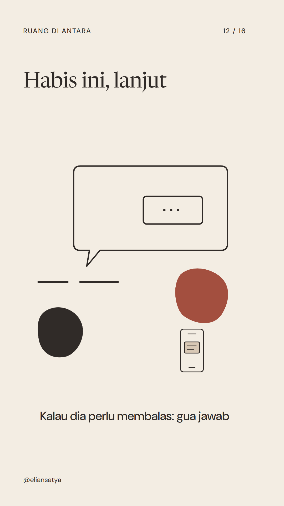
Kalau dia perlu membalas: gua jawab pesan ini sebentar, habis itu gua dengerin lagi.
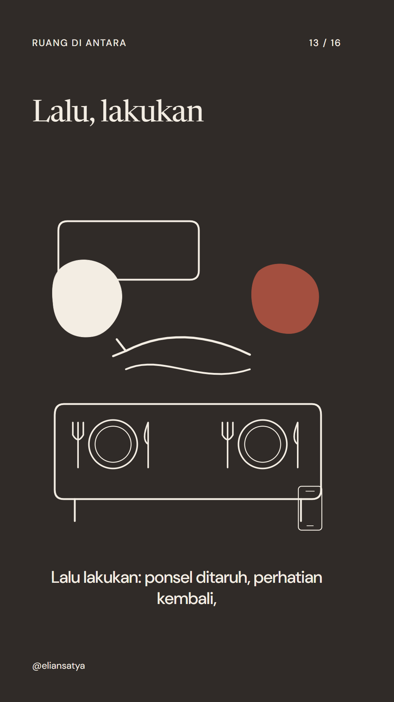
Lalu lakukan: ponsel ditaruh, perhatian kembali, dan ceritanya dilanjutkan dari bagian yang tertinggal.
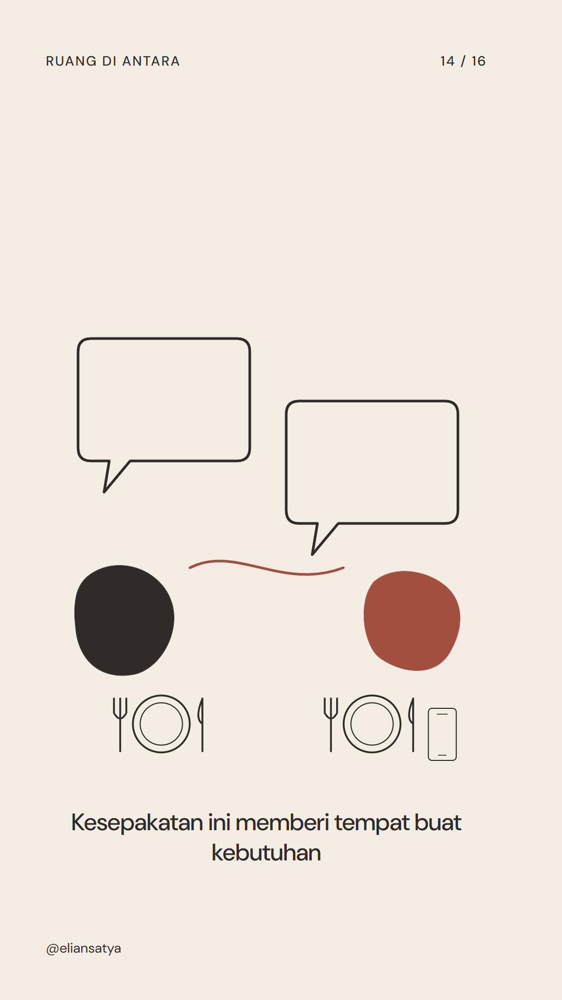
Kesepakatan ini memberi tempat buat kebutuhan komunikasi kalian. Kalian juga boleh menyepakati kapan perlu jeda.
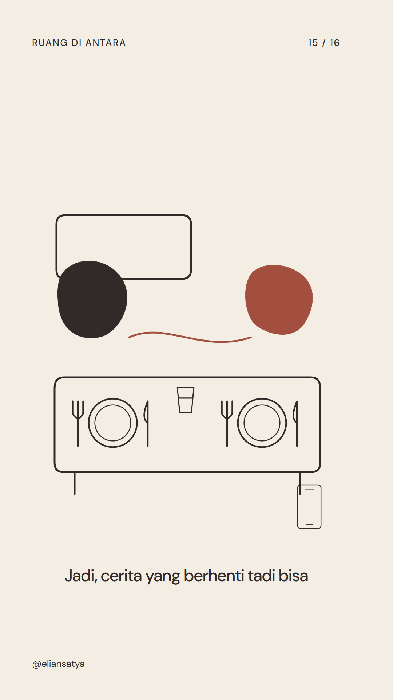
Jadi, cerita yang berhenti tadi bisa dibuka lagi lewat permintaan perhatian yang jelas.
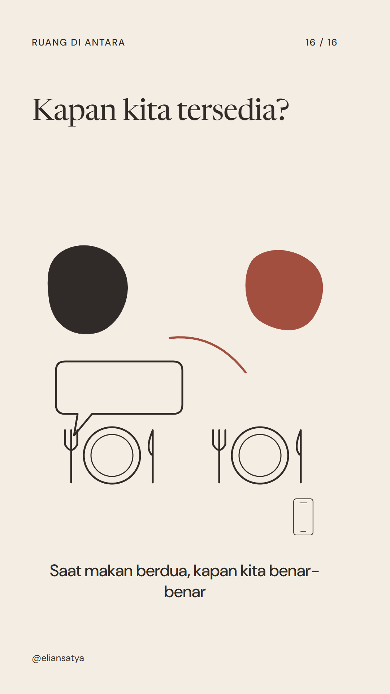
Saat makan berdua, kapan kita benar-benar tersedia buat saling mendengar?